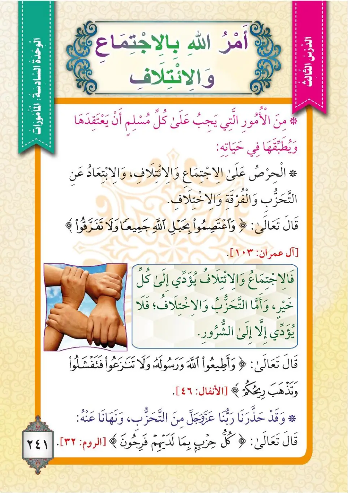
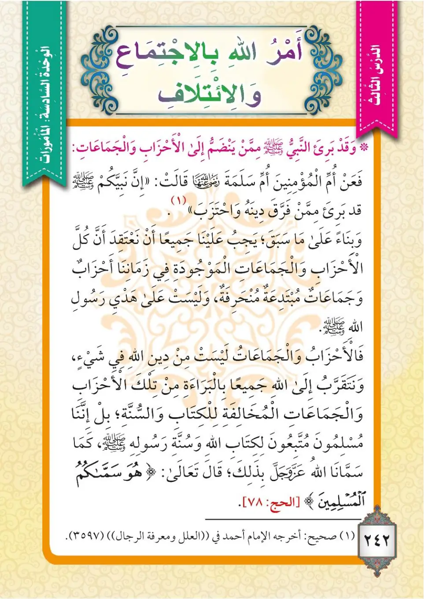

Stage 3·المرحلة الثالثة⭐ Unit 2
الأَمْرُ بِالاجْتِمَاعِ وَالائْتِلافِ The Command to Unite and Harmonize
From the Textbookpp. 242–243


مِنَ الْأُمُورِ الَّتِي يَجِبُ عَلَى كُلِّ مُسْلِمٍ أَنْ يَعْتَقِدَهَا وَيُطَبِّقَهَا فِي حَيَاتِهِ: الْحِرْصُ عَلَى الِاجْتِمَاعِ وَالِائْتِلَافِ، وَالِابْتِعَادُ عَنِ التَّحَزُّبِ وَالْفُرْقَةِ وَالِاخْتِلَافِ. قَالَ تَعَالَى:
Min al-umuri allati yajibu 'ala kulli muslimin an ya'taqidaHa wa yutabbiqaHa fi hayatiHi: al-hirsu 'ala al-ijtima'i wal-i'tilafi, wal-ibtida'u 'an at-tahazzubi wal-furqati wal-ikhtilafi. Qala ta'ala:
Among the matters that every Muslim must believe in and apply in his life: striving to be united and harmonious, and keeping away from partisanship, division, and disagreement. Allah the Exalted said:
ஒவ்வொரு முஸ்லிமும் தன் வாழ்வில் நம்பி பின்பற்ற வேண்டிய விஷயங்களில்: ஒற்றுமை (ஜமாஅத்) மற்றும் இணக்கத்தை வலியுறுத்துவது; குழுப்பிளவு (ஹிஸ்பிய்யா), பிரிவினை, மாறுபாடு ஆகியவற்றை விட்டு விலகுவது. அல்லாஹ் கூறினான்:
﴿وَاعْتَصِمُوا بِحَبْلِ اللَّهِ جَمِيعًا وَلَا تَفَرَّقُوا ۚ وَاذْكُرُوا نِعْمَتَ اللَّهِ عَلَيْكُمْ إِذْ كُنتُمْ أَعْدَاءً فَأَلَّفَ بَيْنَ قُلُوبِكُمْ فَأَصْبَحْتُم بِنِعْمَتِهِ إِخْوَانًا وَكُنتُمْ عَلَىٰ شَفَا حُفْرَةٍ مِّنَ النَّارِ فَأَنقَذَكُم مِّنْهَا ۗ كَذَٰلِكَ يُبَيِّنُ اللَّهُ لَكُمْ آيَاتِهِ لَعَلَّكُمْ تَهْتَدُونَ﴾
Wa'-tasimu bi-habli Allahi jami'an wa la tafarriqu; wa-dhkuru ni'mata Allahi 'alaykum idh kuntum a'da'an fa-allafa bayna qulubiikum fa-asbahtum bi-ni'matiHi ikhwanan; wa kuntum 'ala shafa hufratin mina an-nari fa-anqadhakum minha; kadhalika yubayyinu Allahu lakum ayatiHi la'allakum tahtadun.
Hold fast to God’s rope all together; do not split into factions. Remember God’s favour to you: you were enemies and then He brought your hearts together and you became brothers by His grace; you were about to fall into a pit of Fire and He saved you from it- in this way God makes His revelations clear to you so that you may be rightly guided.
அனைவரும் சேர்ந்து அல்லாஹ்வின் கயிற்றை (திருக்குர்ஆனை) உறுதியாகப் பிடித்துக் கொள்ளுங்கள்; பிரிந்து போகாதீர்கள். அல்லாஹ் உங்கள் மீது அளித்த அருளை நினைவு கூருங்கள்: நீங்கள் பகைவர்களாக இருந்தீர்கள்; அவன் உங்கள் உள்ளங்களை இணைத்தான்; அவன் அருளால் சகோதரர்களாக ஆனீர்கள். நீங்கள் நரகக் குழியின் விளிம்பில் இருந்தீர்கள்; அவனோ அதிலிருந்து உங்களைக் காப்பாற்றினான். இவ்வாறே அல்லாஹ் உங்களுக்குத் தன் வசனங்களை விளக்குவான்; நீங்கள் நேர் வழி பெறுவீர்களாக.
فَالِاجْتِمَاعُ وَالِائْتِلَافُ يُؤَدِّي إِلَى كُلِّ خَيْرٍ، وَأَمَّا التَّحَزُّبُ وَالِاخْتِلَافُ فَلَا يُؤَدِّيَانِ إِلَّا إِلَى الشُّرُورِ. قَالَ تَعَالَى:
Fa-al-ijtima'u wal-i'tilafu yu'addi ila kulli khayrin, wa amma at-tahazzubu wal-ikhtilafu fa-la yu'addiyani illa ila ash-shururi. Qala ta'ala:
So unity and harmony lead to every good, whereas partisanship and disagreement lead only to evils. Allah the Exalted said:
ஒற்றுமையும் இணக்கமும் ஒவ்வொரு நன்மைக்கும் வழி வகுக்கின்றன. குழுப்பிளவும் மாறுபாடும் தீமைகளைத் தவிர வேறெதற்கும் வழி வகுக்காது. அல்லாஹ் கூறினான்:
﴿وَأَطِيعُوا اللَّهَ وَرَسُولَهُ وَلَا تَنَازَعُوا فَتَفْشَلُوا وَتَذْهَبَ رِيحُكُمْ ۖ وَاصْبِرُوا ۚ إِنَّ اللَّهَ مَعَ الصَّابِرِينَ﴾
Wa ati'u Allaha wa rasulaHu wa la tanaza'u fa-tafshalu wa tadhhaba rihuKum; wasbiru; inna Allaha ma'a as-sabirin.
Obey God and His Messenger, and do not quarrel with one another, or you may lose heart and your spirit may desert you. Be steadfast: God is with the steadfast.
அல்லாஹ்வுக்கும் அவன் தூதருக்கும் கீழ்ப்படியுங்கள்; பிணங்கிக் கொள்ளாதீர்கள்; (அவ்வாறு செய்தால்) நீங்கள் தளர்ச்சியடைவீர்கள்; உங்கள் வலிமை போய்விடும். பொறுமையாக இருங்கள்; நிச்சயமாக அல்லாஹ் பொறுமையாளருடன் இருக்கிறான்.
وَقَدْ حَذَّرَنَا رَبُّنَا عَزَّ وَجَلَّ مِنَ التَّحَزُّبِ، قَالَ تَعَالَى:
Wa qad hadhdhara-na rabbuna azza wa jalla mina at-tahazzubi, qala ta'ala:
Our Lord, Mighty and Majestic, has warned us against partisanship. Allah the Exalted said:
குழுப்பிளவைப் பற்றி நம் இறைவன் நம்மை எச்சரித்துள்ளான். அவன் கூறினான்:
﴿مِنَ الَّذِينَ فَرَّقُوا دِينَهُمْ وَكَانُوا شِيَعًا ۖ كُلُّ حِزْبٍ بِمَا لَدَيْهِمْ فَرِحُونَ﴾
Mina alladhina farraqu dinaHum wa kanu shiya'an; kullu hizbin bima ladayHim farihun.
those who divide their religion into sects, with each party rejoicing in their own.
தம் மார்க்கத்தைப் பிளவுபடுத்தி பல குழுக்களாகப் பிரிந்தவர்களை (நீர் சேராதீர்); ஒவ்வொரு குழுவும் தம்மிடம் இருப்பதைக் கொண்டு மகிழ்கின்றனர்.
وَقَدْ بَرِئَ النَّبِيُّ ﷺ مِمَّنْ يَنْضَمُّ إِلَى الْأَحْزَابِ وَالْجَمَاعَاتِ. فَعَنْ أُمِّ سَلَمَةَ أُمِّ الْمُؤْمِنِينَ رَضِيَ اللهُ عَنْهَا قَالَتْ: «إِنَّ نَبِيَّكُمْ ﷺ قَدْ بَرِئَ مِمَّنْ فَرَّقَ دِينَهُ وَاحْتَزَبَ». صَحِيحٌ: أَخْرَجَهُ الْإِمَامُ أَحْمَدُ فِي ((الْعِلَلِ)) وَمَعْرِفَةِ ((الرِّجَالِ)) (3597).
Wa qad bari'a an-nabiyyu ﷺ mimman yandammu ila al-ahzabi wal-jama'at. Fa-'an Ummi Salamata Ummi al-mu'minina radiyallahu 'anHa qalat: «Inna nabiyyaKum ﷺ qad bari'a mimman farraqa dinaHu wa-htazaba». Sahih: akhrajahu al-imamu Ahmadu fi ((al-'Ilal)) wa ma'rifati ((ar-Rijal)) (3597).
The Prophet ﷺ disassociated himself from whoever joins the parties and groups. Umm Salamah, the Mother of the Believers, may Allah be pleased with her, said: "Indeed your Prophet ﷺ has disassociated himself from whoever split his religion and became partisan." Authentic: recorded by Imam Ahmad in (al-'Ilal) and Ma'rifat (ar-Rijal) (3597).
குழுக்களிலும் சங்கங்களிலும் சேர்பவர்களிடமிருந்து நபி ﷺ விலகிக் கொண்டனர். இறை நம்பிக்கையாளர்களின் தாய் உம்மு ஸலமா (ரலி) கூறினார்கள்: "உங்கள் நபி ﷺ தன் மார்க்கத்தைப் பிளந்து குழுப்படுத்தியவர்களிடமிருந்து விலகி விட்டனர்." ஸஹீஹ்: இமாம் அஹ்மத் ((அல்-இலல்)) மற்றும் மஅரிஃபத் ((அர்-ரிஜால்)) (3597) இல் அறிவித்தார்.
وَبِنَاءً عَلَى مَا سَبَقَ يَجِبُ عَلَيْنَا جَمِيعًا أَنْ نَعْتَقِدَ أَنَّ الْأَحْزَابَ وَالْجَمَاعَاتِ الْمَوْجُودَةَ فِي زَمَانِنَا مُبْتَدِعَةٌ مُنْحَرِفَةٌ، وَلَيْسَتْ عَلَى هُدَى رَسُولِ اللهِ ﷺ. فَالْأَحْزَابُ وَالْجَمَاعَاتُ الْمُخَالِفَةُ لِلْكِتَابِ وَالسُّنَّةِ لَيْسَتْ مِنْ دِينِ اللهِ فِي شَيْءٍ، وَنَتَقَرَّبُ إِلَى اللهِ جَمِيعًا بِالْبَرَاءَةِ مِنْ تِلْكَ الْأَحْزَابِ. بَلْ إِنَّنَا مُسْلِمُونَ مُتَّبِعُونَ لِكِتَابِ اللهِ وَسُنَّةِ رَسُولِهِ، كَمَا سَمَّانَا اللهُ عَزَّ وَجَلَّ بِذَلِكَ. قَالَ تَعَالَى:
Wa bina'an 'ala ma sabaqa yajibu 'alayna jami'an an na'taqida anna al-ahzaba wal-jama'ati al-mawjudata fi zamanina mubtadi'atun munharifatun, wa laysat 'ala huda rasulillahi ﷺ. Fa-al-ahzabu wal-jama'atu al-mukhalifatu li-l-kitabi was-sunnati laysat min dini Allahi fi shay'in, wa nataqarrabu ila Allahi jami'an bil-bara'ati min tilka al-ahzab. Bal innana muslimuna muttabi'una li-kitabi Allahi wa sunnati rasuliHi, kama sammana Allahu azza wa jalla bi-dhalika. Qala ta'ala:
Based on what has preceded, we must all believe that the parties and groups existing in our time are innovated and deviant, not on the guidance of the Messenger of Allah ﷺ. The parties and groups that contradict the Book and the Sunnah have nothing to do with the religion of Allah, and we all draw nearer to Allah by disassociating ourselves from those parties. Rather, we are Muslims following the Book of Allah and the Sunnah of His Messenger, just as Allah, Mighty and Majestic, named us. Allah the Exalted said:
மேற்கூறியவற்றின் அடிப்படையில், நம் காலத்தில் உள்ள குழுக்களும் சங்கங்களும் பித்அத் (புதுமைகள்) கொண்டவையும் வழிகெட்டவையும், அல்லாஹ்வின் தூதர் ﷺ அவர்களின் நேர் வழியில் இல்லாதவையும் என்று நாம் அனைவரும் நம்ப வேண்டும். வேதத்திற்கும் சுன்னாவிற்கும் மாறான குழுக்களும் சங்கங்களும் அல்லாஹ்வின் மார்க்கத்தில் எவ்விதமும் இல்லை. அந்தக் குழுக்களை விட்டு விலகி நாங்கள் அனைவரும் அல்லாஹ்விடம் நெருங்குகிறோம். மாறாக, நாங்கள் அல்லாஹ்வின் வேதத்தையும் அவன் தூதரின் சுன்னாவையும் பின்பற்றும் முஸ்லிம்களே; அல்லாஹ் எங்களை அவ்வாறே பெயரிட்டான். அல்லாஹ் கூறினான்:
﴿وَجَاهِدُوا فِي اللَّهِ حَقَّ جِهَادِهِ ۚ هُوَ اجْتَبَاكُمْ وَمَا جَعَلَ عَلَيْكُمْ فِي الدِّينِ مِنْ حَرَجٍ ۚ مِّلَّةَ أَبِيكُمْ إِبْرَاهِيمَ ۚ هُوَ سَمَّاكُمُ الْمُسْلِمِينَ مِن قَبْلُ وَفِي هَٰذَا لِيَكُونَ الرَّسُولُ شَهِيدًا عَلَيْكُمْ وَتَكُونُوا شُهَدَاءَ عَلَى النَّاسِ ۚ فَأَقِيمُوا الصَّلَاةَ وَآتُوا الزَّكَاةَ وَاعْتَصِمُوا بِاللَّهِ هُوَ مَوْلَاكُمْ ۖ فَنِعْمَ الْمَوْلَىٰ وَنِعْمَ النَّصِيرُ﴾
Wa jahidu fi Allahi haqqa jihadiHi; Huwa-jtabakum wa ma ja'ala 'alaykum fi ad-dini min haraj; millata abiikum Ibrahima; Huwa sammaKum al-muslimina min qablu wa fi hadha li-yakuna ar-rasulu shahidan 'alaykum wa takunu shuhada'a 'ala an-nas; fa-aqimu as-salata wa atu az-zakata wa'-tasimu billahi Huwa mawlaKum fa-ni'ma al-mawla wa ni'ma an-nasir.
Strive hard for God as is His due: He has chosen you and placed no hardship in your religion, the faith of your forefather Abraham. God has called you Muslims––both in the past and in this [message]––so that the Messenger can bear witness about you and so that you can bear witness about other people. So keep up the prayer, give the prescribed alms, and seek refuge in God: He is your protector––an excellent protector and an excellent helper.
அல்லாஹ்விடம் சரியான முறையில் அல்லாஹ்வுக்காகப் போராடுங்கள். அவனே உங்களைத் தேர்ந்தெடுத்தான்; மார்க்கத்தில் உங்களுக்கு எந்தச் சிரமத்தையும் ஏற்படுத்தவில்லை. உங்கள் தந்தை இப்ராஹீமின் மார்க்கமே இது. முன்னும் இதிலும் உங்களை முஸ்லிம்கள் என்று பெயரிட்டவன் அவனே. தூதர் உங்களுக்குச் சாட்சியாகவும், நீங்கள் மனிதர்களுக்குச் சாட்சிகளாகவும் இருப்பதற்காக. எனவே தொழுகையை நிலைநிறுத்துங்கள்; ஸகாத்தை வழங்குங்கள்; அல்லாஹ்வையே பற்றிக் கொள்ளுங்கள்; அவனே உங்கள் பாதுகாவலன் - சிறந்த பாதுகாவலன், சிறந்த உதவியாளன்.